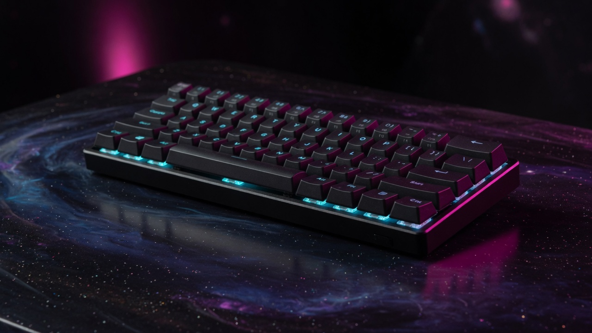
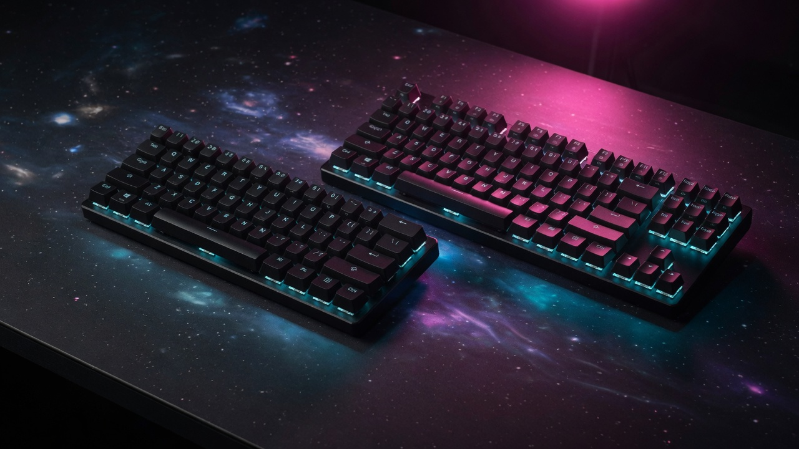

Best Hall Effect Gaming Keyboards 2026
Updated August 2026. Rapid Trigger is the standard, not a preview. Public pro-share has the Wooting 80HE first overall, Huntsman V3 Pro TKL still huge, and 60HE / 60HE v2 owning compact desks. This is spec analysis plus public reviews — not a CosmicGamesHub lab. Approximate prices.

| Pick | Board | Price | Why |
|---|---|---|---|
| 👑 Default | Wooting 80HE | ~$200 | CS2 / Fortnite pro default, types |
| 🎯 Compact | Wooting 60HE v2 | ~$180 | Max mouse space, VALORANT |
| 🏢 Retail analog | Huntsman V3 Pro TKL | ~$219 | Rapid Trigger you can return at Best Buy |
| 📺 OLED TKL | Apex Pro TKL | ~$189 | OmniPoint + display, no longer the meta |
1. Wooting 80HE — the board

80% layout, gasket, Rapid Trigger, analog, Tachyon 8 kHz, hot-swap HE. August CS2 tracking has it first by a wide margin. PCR is the competitive buy. Full review.
Review → vs 60HE v2 → 🛒 Amazon search (tag on)2. Wooting 60HE v2 — compact

Lekker Tikken, friction-fit module, true 8 kHz, still the VALORANT compact. Original 60HE+ is the leftover Amazon listing. Wired only, same as 80HE.
80HE vs 60HE v2 → 🛒 Amazon search3. Razer Huntsman V3 Pro TKL — retail analog

Not Hall Effect. Analog optical Rapid Trigger, media keys, chassis that feels finished. Second in many CS2 snapshots. Synapse is the tax. Versus 60HE.
🛒 Check Price on Amazon4. SteelSeries Apex Pro TKL — still OmniPoint

Adjustable actuation and an OLED were the story in 2023. In 2026 it is a Hall Effect TKL you buy on sale if you already live in GG, not the board we would send a CS2 player first.
vs K100 → 🛒 Check Price on AmazonHow to choose
Want arrows and the current meta: 80HE. Want mouse space: 60HE v2. Want a box you can return at a US store: Huntsman V3 Pro TKL. Want wireless: none of these — G915 TKL is still the low-profile wireless, and it is not Rapid Trigger.